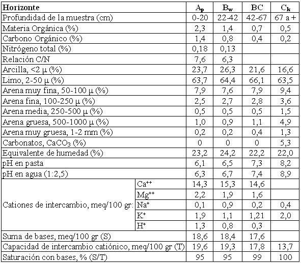

Haplustol típico, limosa fina, mixta, térmica
Capacidad de uso: IIIc
Es un suelo profundo, bien drenado desarrollado a partir de sedimentos loéssicos de textura franco limosa sobre un paisaje de lomas planas muy extendidas ubicadas al norte del río Primero. La capa arable u horizonte superficial (A) tiene 20 cm de espesor, de color pardo grisáceo muy oscuro, con estructura en bloques subangulares. El subsuelo, horizonte Bw, presenta un leve enriquecimiento de arcillas iluviales con estructura en bloques débiles y escasos barnices en las caras de los agregados que se extiende hasta 42 cm de profundidad. Luego de una transición (BC), el material originario del suelo se encuentra a 70 cm de profundidad, es franco limoso, masivo, con material calcáreo libre en la masa del suelo. La reacción en todo el perfil es ligeramente ácida a neutra. No presenta alcalinidad ni salinidad en todo el perfil.
Descripción del perfil típico:
El perfil que representa el modal de la Serie fue descrito a 4,7 km al Este de la localidad de Capilla de los Remedios, departamento Río Segundo, provincia de Córdoba.
Ap 0-20 cm; color en húmedo pardo grisáceo muy oscuro (10YR3/2); franco limoso; estructura en bloques subangulares medios moderados; friable en húmedo; ligeramente plástico; ligeramente adhesivo; límite inferior abrupto, suave.
Bw 20-42 cm; color en húmedo pardo oscuro (7,5YR3/2); franco limoso a franco arcillo limoso; estructura en bloques subangulares medios moderados; friable en húmedo; ligeramente plástico; ligeramente adhesivo; escasos barnices húmicos arcillosos finos; límite inferior claro, suave.
BC 42-67 cm; color en húmedo pardo a pardo oscuro (7,5YR4/4); franco limoso; estructura en bloques subangulares medios moderados a débiles; friable en húmedo; no plástico; no adhesivo; vestigios de barnices arcillosos; escasos durinódulos medios; límite inferior abrupto, suave.
Ck 67 cm a +; color en húmedo pardo (7,5YR5/4); franco limoso; masivo; friable en húmedo; no plástico; no adhesivo; abundante carbonato pulverulento en la masa del suelo; cementado localmente el 30% de su volumen.
Cuadro Nº27
Datos analíticos Serie MONTE CRISTO
Situación: Latitud: 31°24’14”S Longitud: 62°32’43”O Altitud: 335 m.s.n.m.
 |